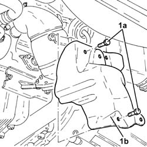
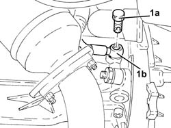
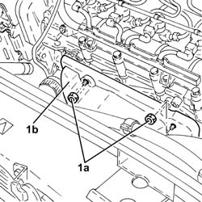
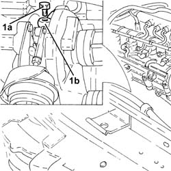
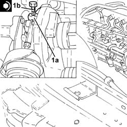
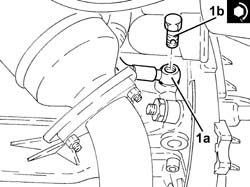

1084B40 ENGINE OIL DELIVERY PIPE TO TURBOCHARGER - R + R
- Path
- Procedures > 10 ENGINE UNIT > 1084 ENGINE LUBRICATION SYSTEM > 1084B ENGINE OIL LUBRICATION CIRCUIT > 1084B40 ENGINE OIL DELIVERY PIPE TO TURBOCHARGER - R + R
- Kind
- repair procedure (removal / refitting; the operation number is the code)
- Applies to
- engines: 1.9 JTD 16V; all production periods
- Interactive page
- https://sloeber94.github.io/elrnDB-aGt/en/#/125001162
Applies to: engines: 1.9 JTD 16V; all production periods
 Removing
Removing
 Refitting
RefittingPosition the vehicle on a lift.
Proceed with removal - 1016A10 SOUNDPROOFING COVER - R&R.
.
Proceed with the removal
Op. 7055B54 UNDER-ENGINE GUARD - R R.
1. Undo the bolts (1a) and remove the lower heat shield (1b) for the exhaust pipe.

Applies to: engines: 1.9 JTD 16V; all production periods
1. Undo the connector (1a) and disconnect the turbocharger oil supply pipe (1b), crankcase side.

Applies to: engines: 1.9 JTD 16V; all production periods
Proceed with the removal
Op. 1088D24 RIGID PIPE FOR COOLANT INLET TO WATER PUMP - R + R.
1. Undo the nuts (1a) and remove the upper heat shield (1b) for the exhaust pipe.

Applies to: engines: 1.9 JTD 16V; all production periods
1. Undo the connector (1a) and disconnect the turbocharger oil supply pipe (1b), turbocharger side and remove it.

Applies to: engines: 1.9 JTD 16V; all production periods
Refitting
Removing1. Place the turbocharger engine oil supply pipe (1a) in position, connect it to the turbocharger and tighten the connector (1b) to the recommended torque.
Fastening | Component | Ø | Value (daNm) | |
|---|---|---|---|---|
1b | - | - | - | - |

Applies to: engines: 1.9 JTD 16V; all production periods
Place the upper heat shield in its housing, then secure it using the nuts.
Proceed with the refitting
Op. 1088D24 RIGID PIPE FOR COOLANT INLET TO WATER PUMP - R + R.
1. Connect the engine oil supply pipe to turbocharger (1a), engine crankcase side, and tighten the connector (1b) to the specified torque.
Fastening | Component | Ø | Value (daNm) | |
|---|---|---|---|---|
1b | Connector | OIL DELIVERY PIPE TO TURBO | M12 | (Engine crankcase side) 1.4 - 1.7 |

Applies to: engines: 1.9 JTD 16V; all production periods
Place the lower exhaust pipe heat shield in its housing and secure it using the bolts.
Refill the engine cooling system
Op. 0010T20 COOLANT CHECK DENSITY AND TOP UP IF NECESSARY.
Proceed with the refitting
Op. 7055B54 UNDER-ENGINE GUARD - R R.
Proceed with refitting - 1016A10 SOUNDPROOFING COVER - R&R.
.
Remove the vehicle from the lift.